Programmierung
Schwerpunkt 3D · Simulation · XR · Computergrafik · Spiele
VR-Spiel angelehnt an Ubongo 3D
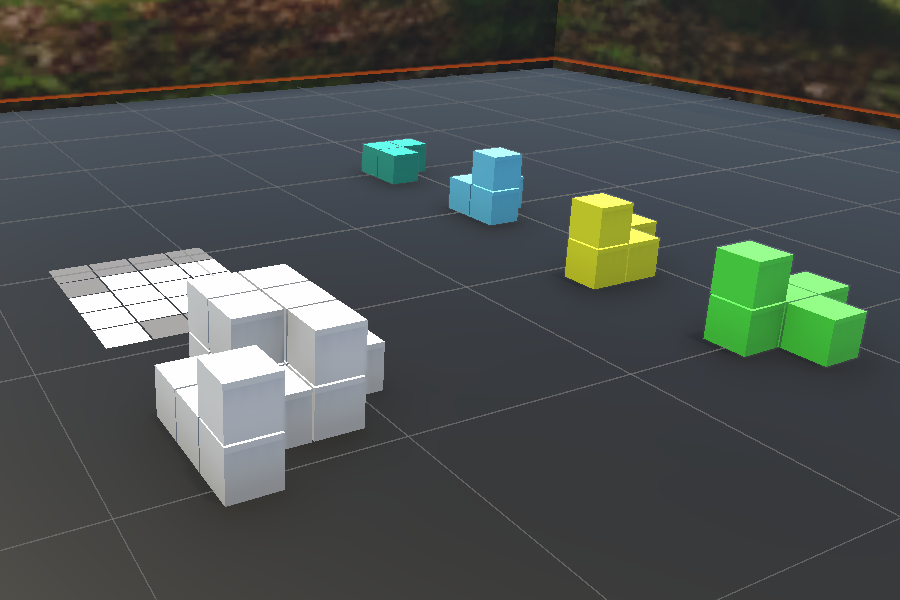
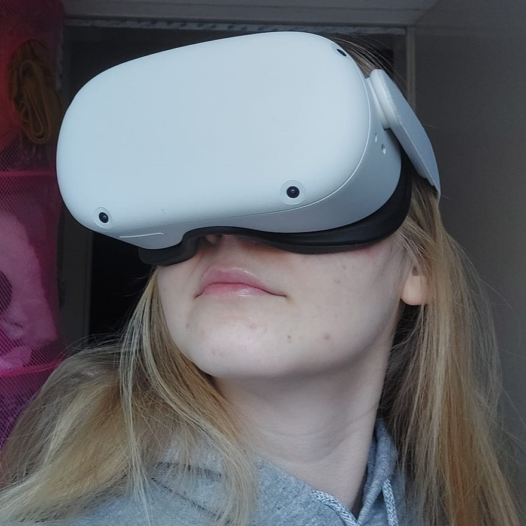
Unity C#
Das grundlegende Spielprinzip dieses VR-Spiels ist an Ubongo 3D angelehnt und wurde erweitert. Ziel des Spiels ist es, die vorgegebenen Figuren mithilfe der Bausteine auf der Legefläche nachzubauen.
Die Bausteine bestehen aus mehreren Voxeln und die Figuren sind durch dreidimensionale Matrizen definiert. Ich habe einen Snap-To-Grid-Algorithmus implementiert, sodass die Bausteine exakt am Gitter ausgerichtet werden. Zudem habe ich einen weiteren Algorithmus implementiert, der überprüft, ob der Spieler die richtige Lösung gelegt hat. Dazu werden die Weltkoordinaten der Bausteine in Matrixpositionen umgerechnet und mit der vorgegebenen Matrix verglichen.
Der Spieler kann entweder gegen einen computergesteuerten Gegner antreten oder die Lösbarkeit eines Levels überprüfen. Für beides kommt ein rekursiver Backtracking-Algorithmus zum Einsatz, welchen ich implementiert habe.
Game Programming Pattern
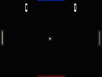
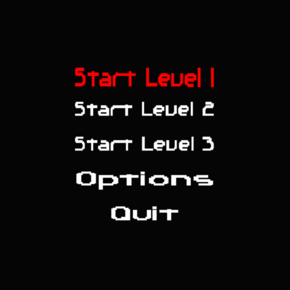
C# .NET
Ziel dieses Projekts war es, Spiele ohne Game Engine zu programmieren, um die grundlegenden Patterns und Prinzipien der Game-Programmierung praktisch zu verstehen. Während des Projekts haben wir die Codebasis schrittweise erweitert, sodass insgesamt drei unterschiedliche Spiele entstanden, die aufeinander aufbauen:
-
Pong: Pongspiel mit drei Leveln
- Level 1: Klassisches Pong für zwei Spieler
- Level 2: Einführung von zwei Portalen (oben und unten), die den Ball beeinflussen
- Level 3: Der zweite Spieler wird durch einen Computergegner ersetzt
- Shoot ’em up: Der Spieler steuert ein Raumschiff und muss auftauchende Gegner abschießen
- Tile-basierter Plattformer: Klassisches Plattformspiel mit drei Leveln, das Bewegung, Kollisionserkennung und Level-Logik implementiert
Das Projekt half mir, Game-Design-Grundlagen, Strukturierung von Code und die Anwendung von Design-Patterns in der Praxis zu erlernen.
Risky Trading – Game Design mit Unity
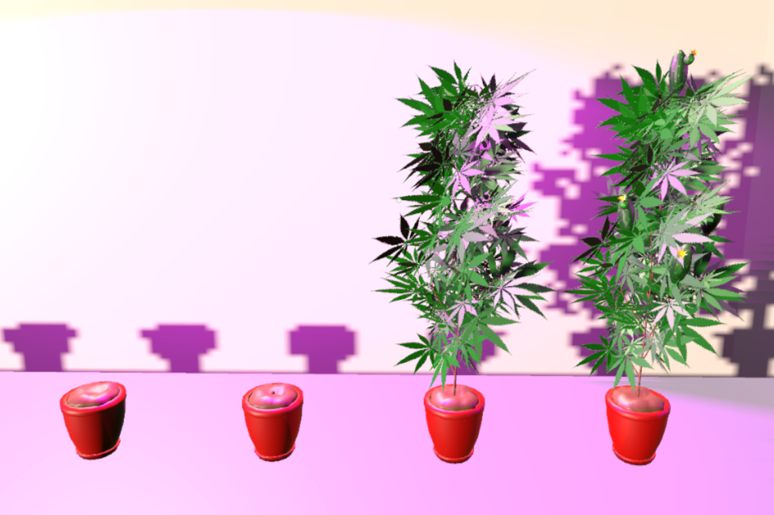
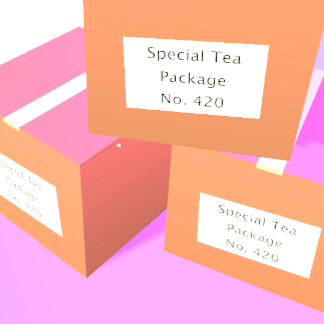
Unity C#
Dieses Projekt ist eine Erweiterung eines Shop-Simulators. Als Grundlage diente das Unity Asset Store Simulator - Supermarket Game Template, dessen Code um zusätzliche Funktionen ergänzt wurde. Die Erweiterungen umfassen Kundenfragen, individuelle Kundenkommentare beim Verlassen des Ladens, Interaktion mit Dealer und Polizei sowie ein Pflanzsystem. In diesem Projekt war ich zuständig für die Implementierung der Logik, während sich meine Teammitglieder um Storytexte und Sound gekümmert haben.
Ein zentrales Element, das ich hinzugefügt habe, ist das Pflanzsystem, das es Spielenden ermöglicht, bis zu acht Töpfe gleichzeitig mit Hanfpflanzen zu bewirtschaften. Samen können eingepflanzt, gegossen und geerntet werden. Die Pflanzen reagieren auf Pflege, durchlaufen mehrere Wachstumsphasen und liefern Blüten, die an Kundschaft im Laden verkauft werden können. Vernachlässigung führt zum Absterben der Pflanzen und beeinflusst den Spielfortschritt unmittelbar.
Zusätzlich habe ich ein System implementiert, über das Spielende illegale Samen bei einem Dealer erwerben können. Polizeipatrouillen überwachen die Umgebung, erkennen illegale Aktivitäten und reagieren mit entsprechenden Strafen. Dadurch habe ich eine dynamische Risikoabwägung zwischen schnellem Gewinn und der Gefahr, entdeckt zu werden, geschaffen.
In den Screenshots sind fremde Assets zu sehen: Einige 3D-Modelle stammen aus dem Unity Asset ‚Stylized Potted Plants‘ von SandoraKa, außerdem wurde das 3D-Modell ‚Hemp Weed Cannabis Sativa‘ von Creazilla verwendet.
Inverse Kinematik: Simulation einer menschlichen Gehbewegung
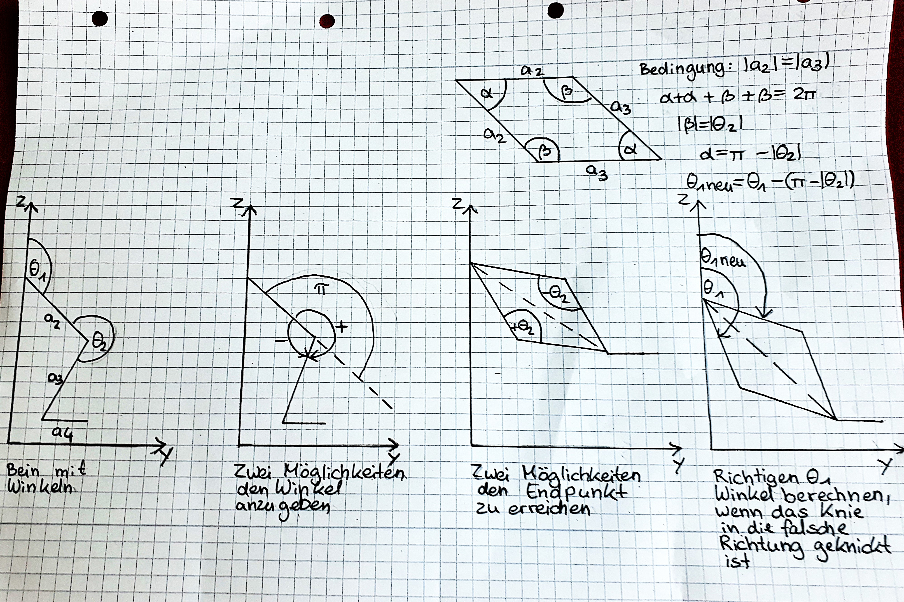
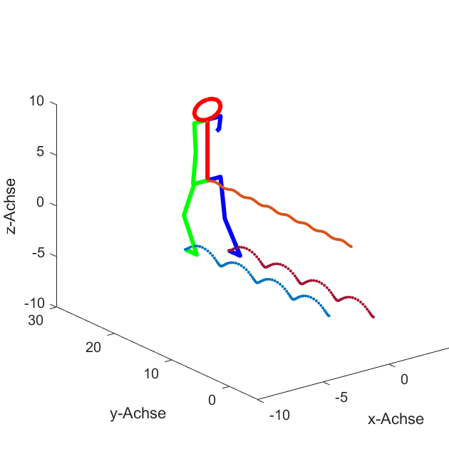
MATLAB
Das Projekt ist zwar schon etwas älter (2. Semester des Bachelorstudiums), ich habe es trotzdem in mein Portfolio aufgenommen, weil ich es spannend finde, mathematische Konzepte zu nutzen, um etwas Grafisches darzustellen. Die Möglichkeit, ein physikalisches Verhalten visuell zu simulieren, hat mich besonders interessiert.
In diesem Projekt zur inversen Kinematik haben wir eine Simulation der menschlichen Gehbewegung entwickelt, die auf einem vereinfachten humanoiden Prototyp basiert. Zwei mathematische Verfahren, die Jacobi-Matrix und das Newton-Raphson-Verfahren, habe ich implementiert, um die benötigten Gelenkwinkel für vorgegebene Fußpositionen zu berechnen. Die Armbewegungen habe ich mittels Vorwärtskinematik simuliert. Wir haben unterschiedliche Bewegungsmuster für Gehen und Laufen berücksichtigt. Einen besonderen Fokus habe ich auf die realistischen Nachbildung der Hüft-, Arm- und Beinbewegungen, einschließlich der physischen Einschränkungen wie das Verhindern eines rückwärts knickenden Knies, gelegt. Die gesamte Umsetzung erfolgte ohne externe MATLAB-Toolboxen, um das mathematische Verständnis zu vertiefen und alle Berechnungen selbstständig zu programmieren.
3D Modelling Software – Computer Graphics
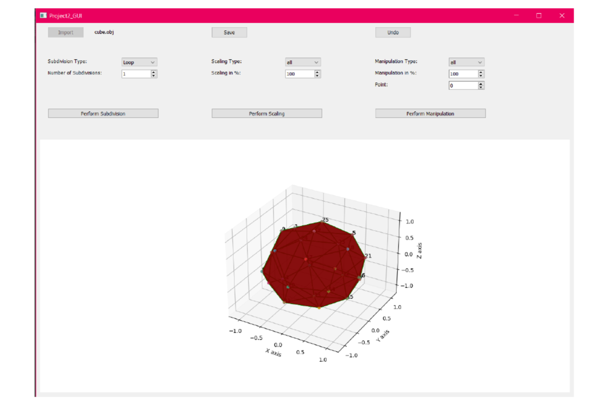
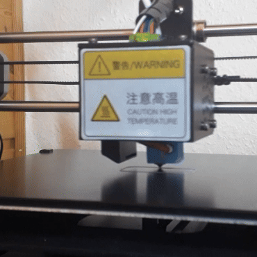
Python 3 PySide6 Qt Designer
Im Projekt haben wir eine 3D-Modellierungssoftware mit einer grafischen Benutzeroberfläche (GUI) in PySide6 entwickelt, die den Import, die Ansicht und die Bearbeitung von .OBJ-Dateien ermöglicht. Nutzer können über Buttons und Slider die 3D-Objekte skalieren und verschiedene Werkzeuge anwenden. Dafür wurden zwei Subdivision-Algorithmen, Loop-Subdivision und lineare Subdivision, implementiert, mit denen die importierten Objekte geglättet oder verfeinert werden. Die GUI wurde visuell mit Qt Designer gestaltet und in Python umgesetzt. Die bearbeiteten 3D-Objekte können gespeichert werden. Im Rahmen des Projekts haben wir die bearbeiteten 3D-Objekte im 3D-Drucker ausgedruckt.
Escape-Box
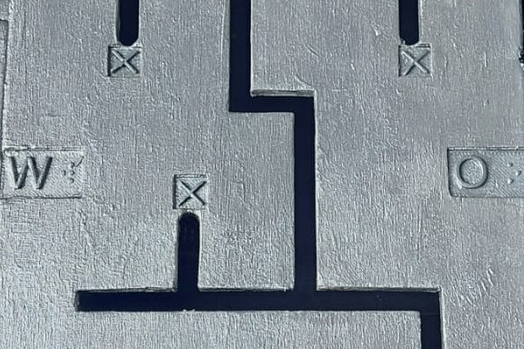
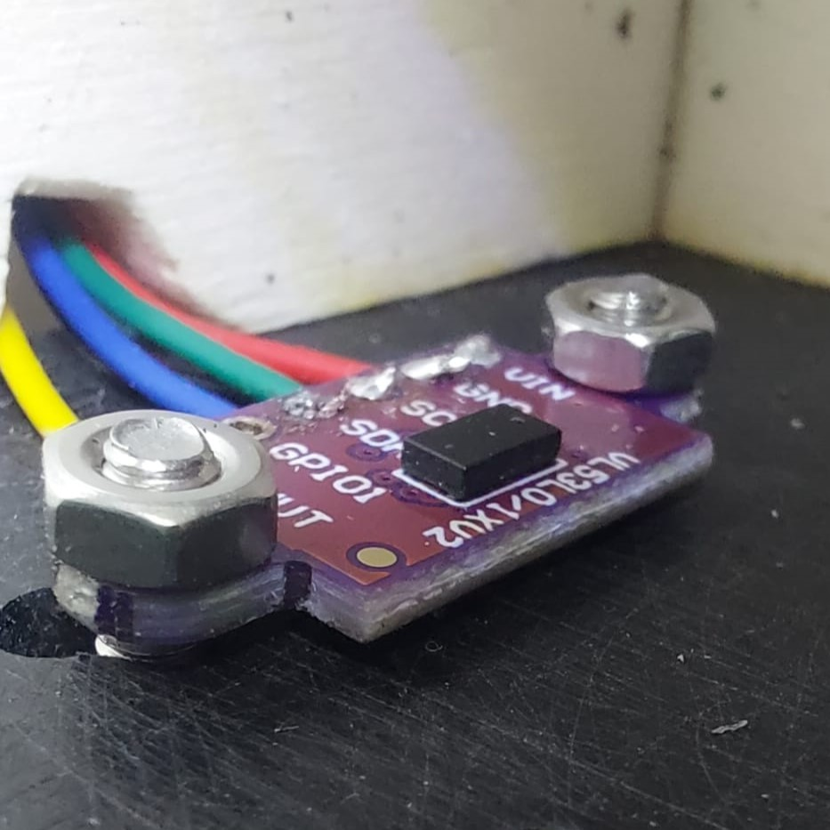
IoT C++
In diesem Projekt ging es darum, eine Escape-Box für Blinde und Sehbehinderte zu entwickln. Es ist in Kooperation mit der Escape Academy entstanden. In dieser Escape-Box geht es darum, verschiedene Rätsel nacheinander zu lösen. Es gibt akustische Anweisungen an die Spieler und Input-Geräte registrieren, ob die Spieler die Rätsel korrekt lösen.
Im Spiel geht es um eine Marsmission. Mein Beitrag war die Konzeption und Umsetzung des letzten Spielabschnitts. In diesem müssen die Spielenden aktiv mit der Box interagieren, um die Mission abzuschließen. Für meinen Spielabschnitt habe ich die Story geschrieben, passende Rätsel entworfen und den Code implementiert sowie die physischen Elemente gebaut. Für eine barrierefreie Umsetzung für Blinde und Sehbehinderte habe ich neben Audio auch viel Haptik genutzt, darunter Markierungen, Braille und erhabene Schrift.
Softwareentwicklung mit Java
Methoden komplexer Softwaresysteme 2
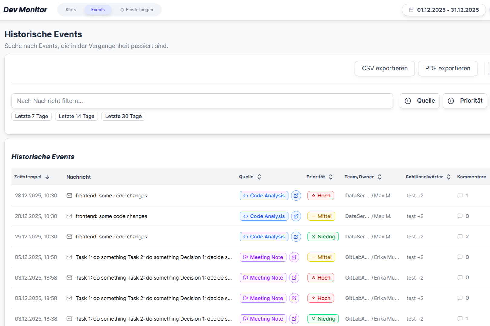
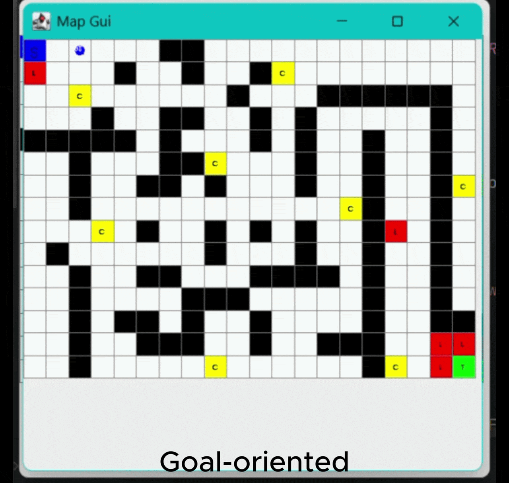
Java Rest Microservices CI/CD Docker Google Cloud React
Das Modul baute fachlich auf dem Modul „Methoden komplexer Softwaresysteme“ auf. Durch das Modul habe ich meine Kenntnisse in der Umsetzung skalierbarer Softwarearchitekturen mit Microservices vertieft. Es war in Einzelaufgaben und ein Gruppenprojekt unterteilt.
In den Einzelaufgaben entwickelte ich verschiedene Algorithmen zur autonomen Steuerungslogik für ein Robotik-Szenario. Dies beinhaltete die Implementierung eines A*-Algorithmus sowie einer Finite State Machine. Ein weiterer Teil der Einzelaufgaben befasste sich mit einem Roboterprogramm, bei dem der Roboter vom Nutzer gesteuert wird. Hierfür implementierte ich einen REST-Service mit API-Anbindung und HATEOAS. Zudem erstellte ich eigene Dockerfiles, baute Images und führte diese lokal mit Docker aus. Ich richtete eine CI/CD-Pipeline in GitLab ein und stellte die Anwendung über Google Cloud Run bereit. Das Frontend wurde dabei als Micro-Frontend umgesetzt.
Im Gruppenprojekt arbeiteten wir in kleinen Teams, die jeweils einen Microservice implementierten oder erweiterten. Dabei war ich für die Event-Monitor-Seite des Develop-Monitor-Teams verantwortlich. Ich erweiterte die Seite unter anderem um Filterfunktionen, eine Kommentarfunktion sowie erweiterbare Spalten für detailliertere Informationen. Besonderen Wert legte ich auf Barrierefreiheit und ein einheitliches Design. Neben der funktionalen Umsetzung richtete ich zudem die Cloud-Infrastruktur und die CI/CD-Pipelines (inklusive Build, Test und Deploy) für das Frontend ein. Für meine Komponenten schrieb ich Unit-Tests, darunter auch Tests zur Barrierefreiheit.
Methoden komplexer Softwaresysteme
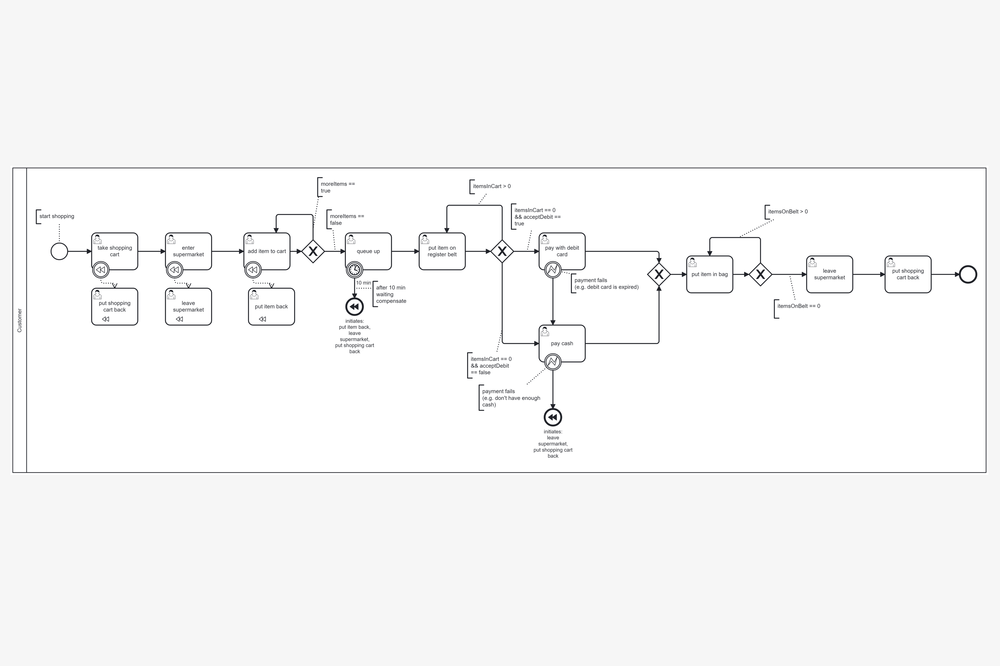
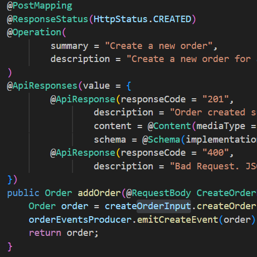
Java Spring Boot Spring Data JPA Rest Maven H2 RabbitMQ UML-Diagramme BPMN Postman
Dies war ein Modul meines Informatik-Masterstudiums. Der Schwerpunkt lag auf dem Entwurf und der Umsetzung komplexer Softwaresysteme nach Prinzipien sauberer Architektur. Dabei habe ich unter anderem ein Ordersystem in Clean Architecture implementiert, das aus mehreren unabhängigen Programmen besteht, die über RabbitMQ miteinander kommunizieren. Es enthält einen REST-Service und einen Event-Prozessor.
Ergänzend dazu haben wir kleinere Projekte entwickelt, um zentrale Design Patterns praktisch anzuwenden. Dazu zählt eine Universal Remote Control unter Beachtung des Command Pattern und eine Media Presentation zur Umsetzung des Composite Patterns.
Neben der Programmierung standen auch Modellierung und Dokumentation im Fokus mit UML-, Klassendiagrammen und BPMN-Modellen zur Visualisierung komplexer Abläufe. Das vermittelte ein fundiertes Verständnis dafür, wie sich große Softwaresysteme strukturiert planen, modular aufbauen und wartbar gestalten lassen.
Webentwicklung
Musik-CAPTCHA
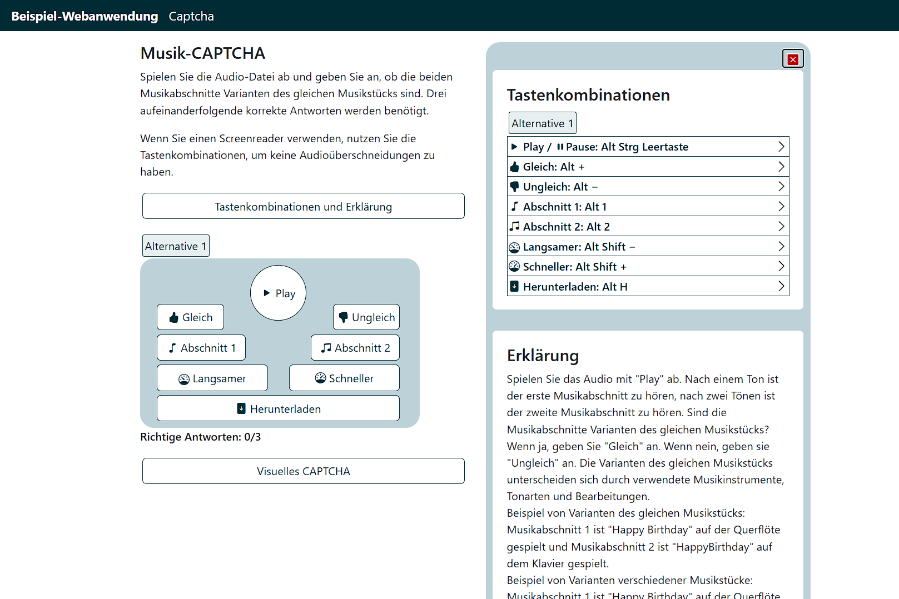
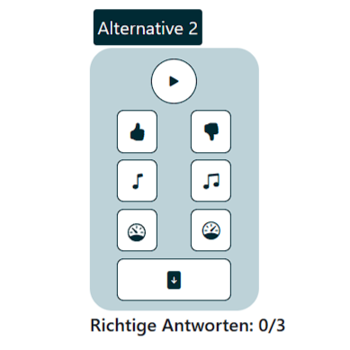
HTML CSS TypeScript Angular MySQL Node.js Express.js MATLAB
Im Rahmen meiner Bachelorarbeit habe ich ein neuartiges Audio-CAPTCHA, welches auf Musik basiert, speziell für blinde und sehbehinderte Nutzer entwickelt. Es basiert auf kurzen Ausschnitten gemeinfreier Musikstücke, bei denen Nutzer entscheiden müssen, ob es sich um Varianten desselben Stücks handelt. Das CAPTCHA umfasst drei Aufgaben und gilt als gelöst, wenn alle korrekt beantwortet werden. Die Audiowiedergabe kann per Tastenkombinationen und individuell anpassbaren Player-Buttons gesteuert werden.
Das Musik-CAPTCHA wurde als barrierefreie Webanwendung mit Frontend und Backend realisiert. Zusätzlich wurde eine Beispielwebanwendung erstellt, in der das Musik-CAPTCHA über ein iFrame eingebunden ist. Bei der Entwicklung wurden die Richtlinien der Web Content Accessibility Guidelines (WCAG) berücksichtigt.
Die Evaluation umfasste mehrere Untersuchungen, darunter den Vergleich mit Googles reCAPTCHA hinsichtlich Benutzerfreundlichkeit, Barrierefreiheit und Sicherheit. Als Teil dieser Evaluation habe ich in MATLAB eine Analyse zur Ähnlichkeitsbewertung von Musikabschnitten implementiert. Dafür habe ich Audiodaten eingelesen, normalisiert und mittels Kreuzkorrelation verglichen, um Unterschiede zwischen Varianten desselben Musikstücks und unterschiedlichen Stücken quantitativ zu erfassen.
Die Ergebnisse der verschiedenen Untersuchungen zeigten eine höhere Barrierefreiheit und bessere Nutzerwahrnehmung bei ähnlicher Effizienz und Fehlertoleranz. Zur statistischen Auswertung habe ich den Mann-Whitney-U-Test in MATLAB eingesetzt. Ergänzende Sicherheitsanalysen belegten einen hohen Schutz gegenüber automatisierten Angriffen, jedoch eine gewisse Anfälligkeit gegenüber Zufallsantworten.
Skillstraining
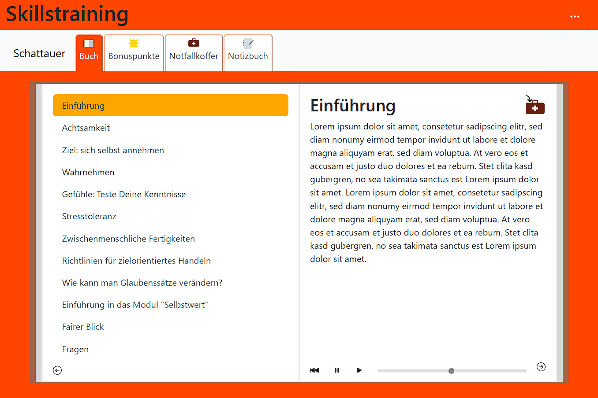
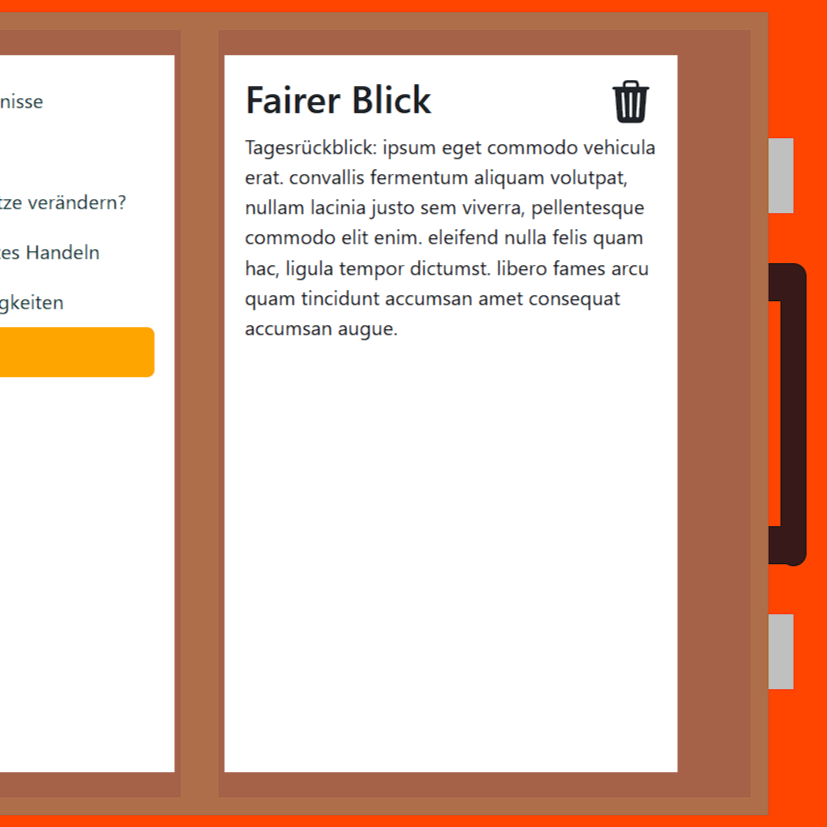
HTML CSS TypeScript Angular
Im Rahmen dieses Projekts habe ich ein Prototyp zur Verbesserung der Usability der Software „Skillstraining_2.0“ entwickelt, die Menschen mit Borderline-Störung beim Erlernen und Anwenden von Skills aus der Dialektisch-Behavioralen Therapie unterstützt. Der Fokus lag auf der Optimierung des sogenannten Notfallkoffers, einem zentralen Element der Anwendung, das gespeicherte Inhalte für akute Belastungssituationen bereithält.
Durch Nutzerfeedback und einen Think-Aloud-Test konnte ich konkrete Probleme wie unklare Icons und eine umständliche Navigation identifiziert und durch neue Funktionen und ein überarbeitetes Design beheben. Den Prototyp habe ich mit Angular programmiert. Er ermöglichte unter anderem das intuitive Speichern, Löschen und Wiederfinden wichtiger Inhalte. Ein abschließender Vergleichstest mit sechs Testpersonen zeigte, dass der neue Prototyp in Bezug auf Bedienzeit und Benutzerfreundlichkeit besser abschnitt als das Original.
Frontend Challenges
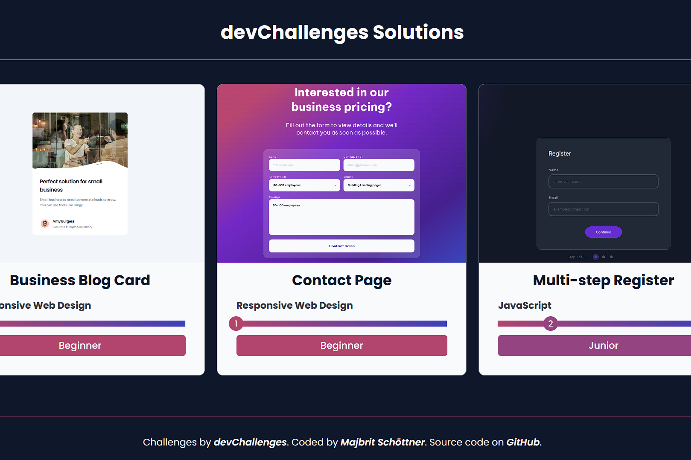
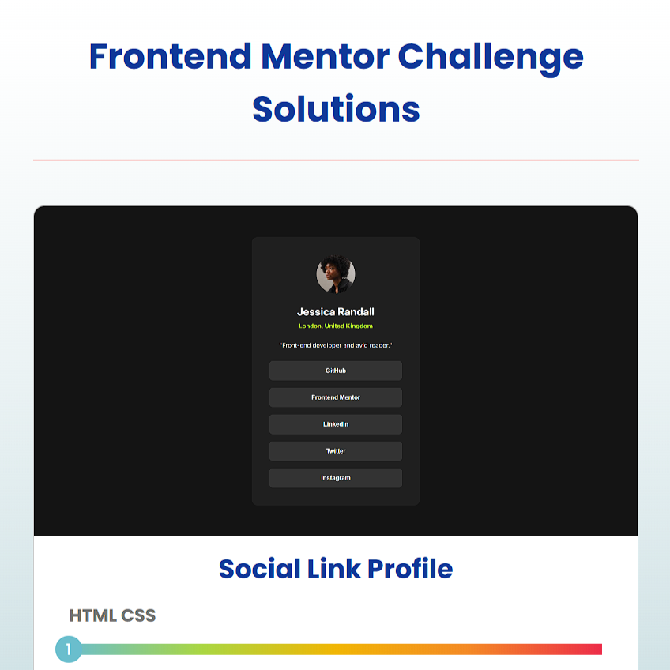
HTML CSS JavaScript
Ich habe Frontend Challenges von verschiednen Websites gemacht. Die eine ist devChallenges. Dies habe ich genutzt, um das Darstellen mit HTML, CSS und JavaScript zu üben. Es ging mir vor allem um responsive Gestaltung, also darum, dass Seiten auf Desktop und Mobilgeräten gut aussehen. Besonders das Arbeiten mit Flexbox habe ich dabei geübt.
Die andere Website, von der ich Challenges gemacht habe, ist FrontendMentor. Wie bei den anderen Challenges lag der Fokus darauf CSS zu nutzen, um eine Website ästetisch und funktional zu gestalten.
Erkundung & Weiterbildung
TryHackMe
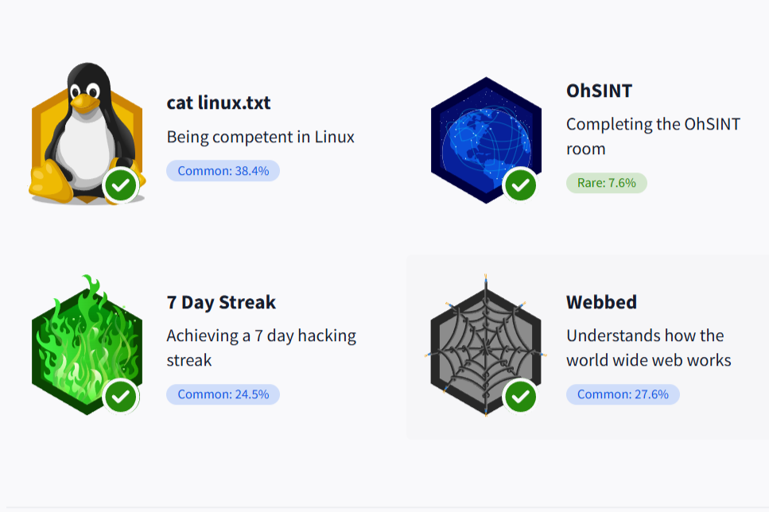
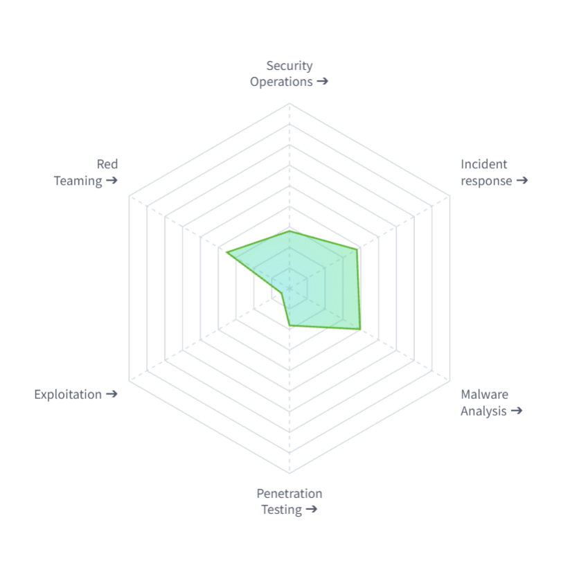
Security Linux Web
In meiner Freizeit habe ich praxisorientierte Lernräume und Challenges auf der Plattform TryHackMe bearbeitet, um mein Wissen im Bereich IT-Sicherheit zu vertiefen. Dabei konnte ich Grundlagen der offensiven und defensiven Sicherheit kennenlernen und an realistischen Szenarien üben. Besonders gefallen hat mir mein Wissen über reguläre Ausdrücke zu vertiefen.